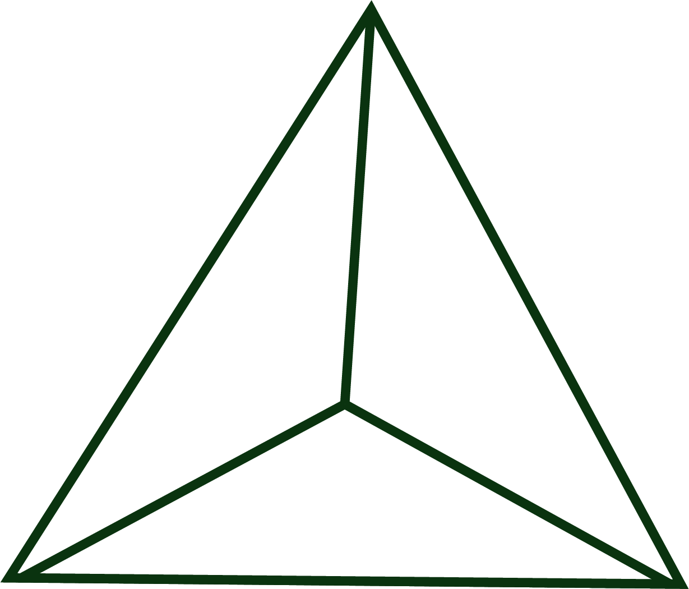
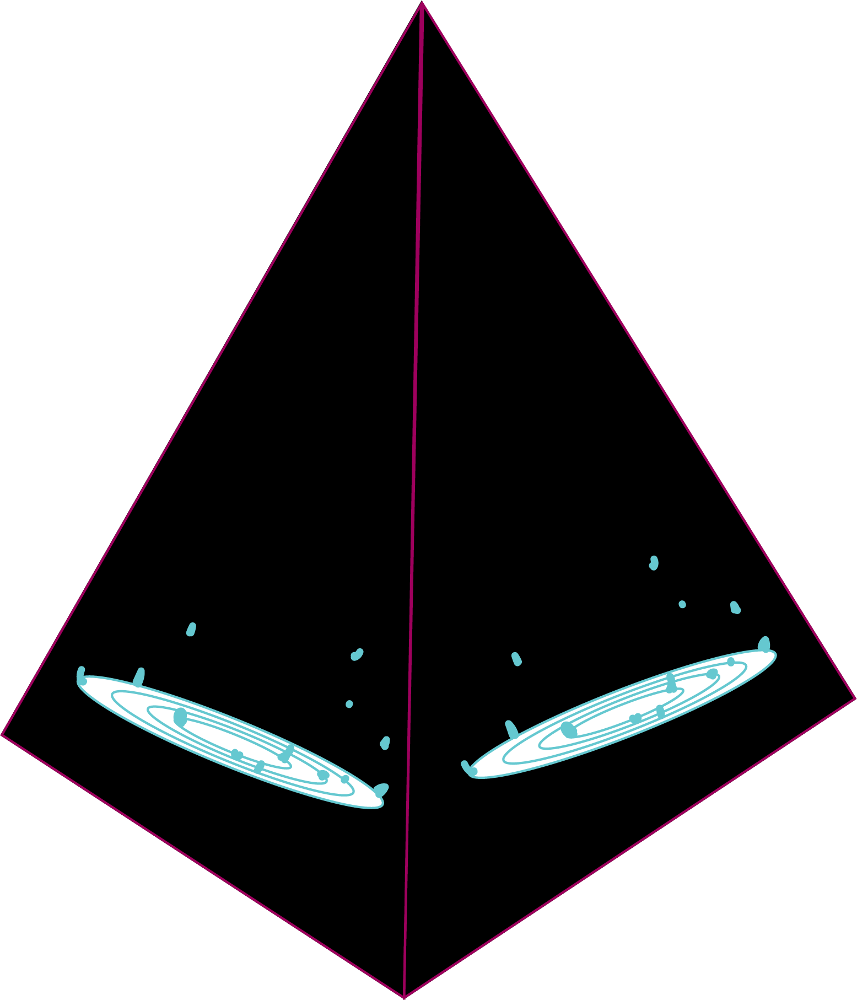
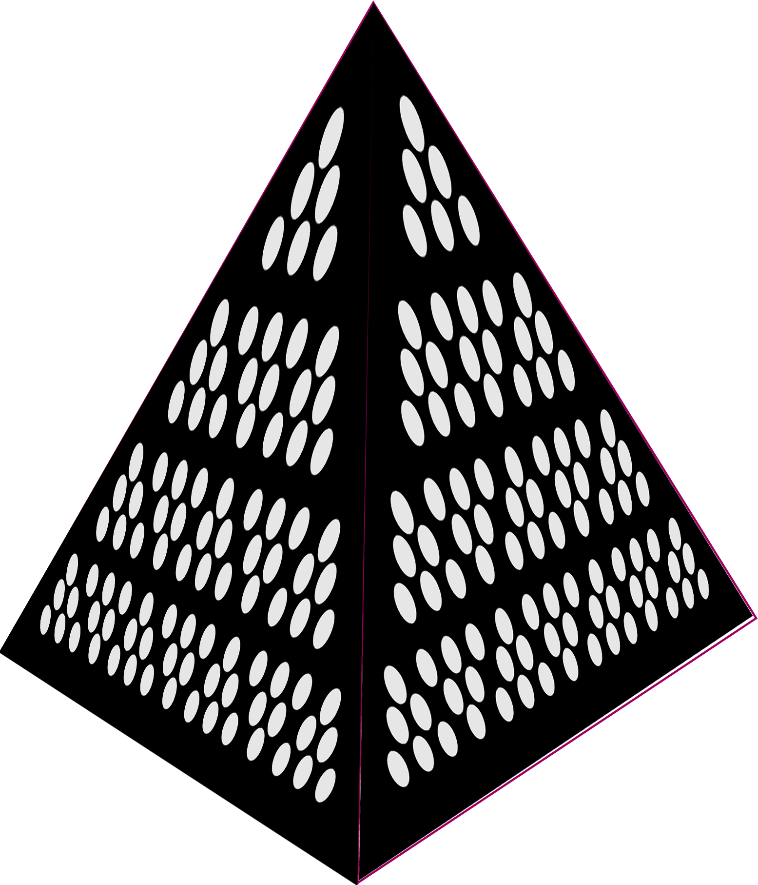
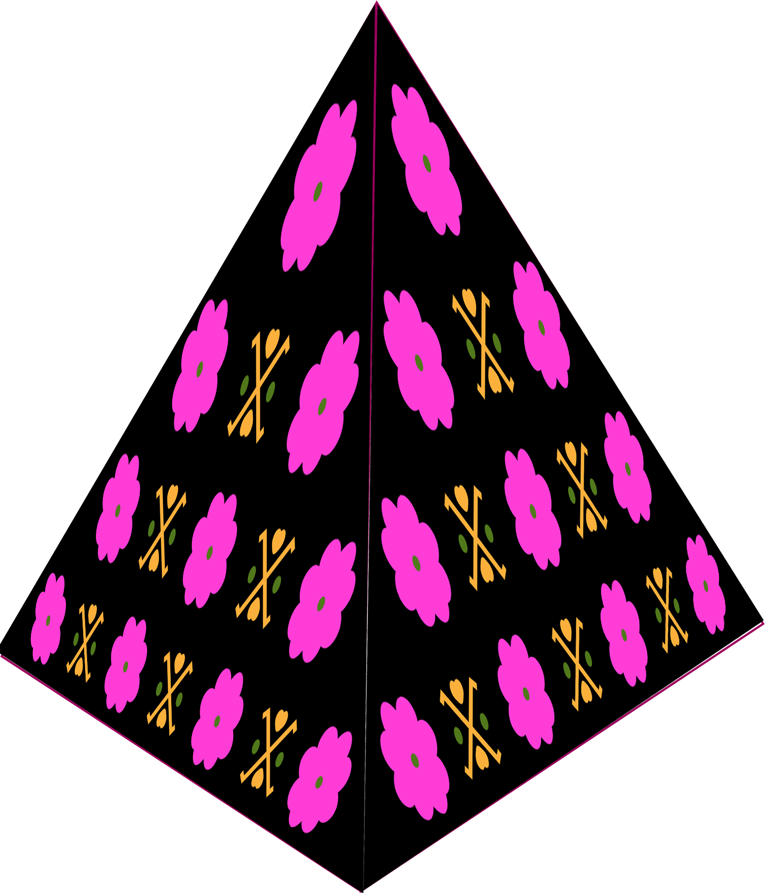
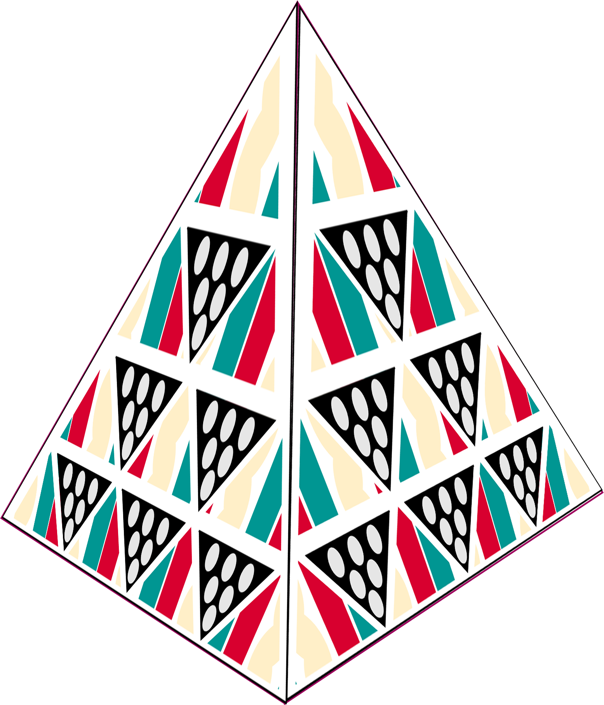
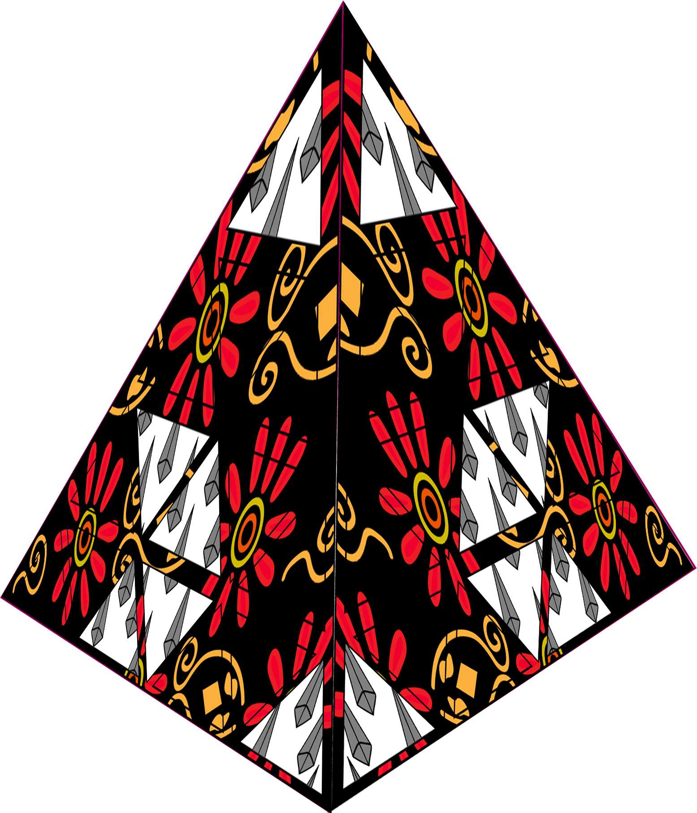
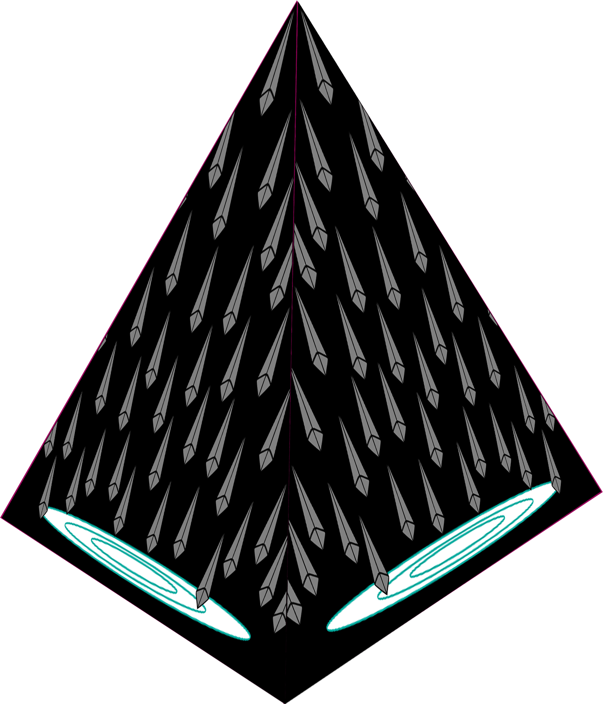

拉祜族圖騰投影
以拉祜族服飾圖騰為靈感的投影視覺實驗，透過幾何結構、圖案轉換與光影節奏， 呈現傳統紋樣在空間中的動態變化。
Info
Type｜Projection Mapping
Category｜Motion / Visual Experiment
Year｜2024
Format｜Projection Video / Group Project
Concept
本作品以拉祜族服飾上的彩色花邊與圖騰紋樣為視覺來源， 將其轉化為三角幾何結構上的投影動畫。 畫面從水波、粒子與圖形生成開始，逐步轉換為服飾紋樣與抽象圖騰。
透過投影在立體三角結構上的視覺變化，作品嘗試探索圖案、空間與動態節奏之間的關係。
Projection Object
投影物件為三角立體結構，約 100cm × 100cm。影像會依照三角面分布， 使圖騰在不同面向中產生延伸與變化。

Visual Development
由幾何結構出發，逐步轉化為拉祜族服飾圖騰與裝飾紋樣的視覺發展過程。
初始幾何結構建立。

加入水波與光影效果。

轉化為立體投影結構。

圖騰紋樣開始生成。

圖案與結構進一步融合。

形成較完整的圖騰畫面。

畫面逐漸收斂並消散。
* 原作品搭配音樂呈現，因版權因素此處僅展示靜音影像版本。